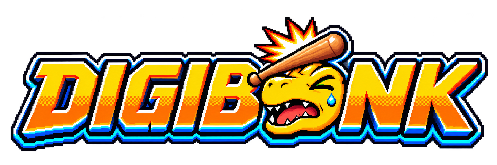

Preparando escenario

Sobrevive. Digievoluciona. Rompe tu récord.
Los bits y el entrenamiento de tus huevos se conservan entre partidas. Mejora la incubadora para abrir nuevas ramas hasta Mega. Entra con tu cuenta para competir en la clasificación del grupo.
Tu run permanece guardada. Al volver puedes seguir desde aquí.
Los símbolos indican qué hay en cada punto. Una marca de verificación indica un portal cerrado; la flecha dentro de un portal indica el regreso.
Ajusta la música del menú, la isla y los portales. Puedes elegir un archivo de tu PC para esta sesión.
Haz clic en una tecla y pulsa la que prefieras. Puedes asignar dos teclas por acción.
0 % oculta el efecto; 100 % muestra su máxima opacidad. Se aplica también a sus estelas y brillos.
Movimiento: , , , . También puedes hacer clic en el suelo.
: esquiva con un salto corto. Tiene recarga.
: abre cofres, visita a Wizardmon o activa santuarios cercanos. Amplía el mapa con M o el botón ⛶. La partida se pausa mientras está abierto.
Personaliza las teclas y la opacidad de los efectos en ⚙ Ajustes, arriba o desde la pausa.
Los ataques son automáticos. Los elementos pueden aplicar estados sobre los enemigos: consulta sus probabilidades, duración y efectos en Técnicas y objetos → Estados. Empapar a un enemigo permite potenciar una descarga eléctrica posterior. Recoge los cristales de experiencia para subir de nivel y elegir una de tres mejoras.
La incubadora empieza con Botamon y una ruta desbloqueada. Gana bits permanentes durante las runs para comprar huevos o mejorar fuerza, velocidad de ataque, vitalidad y movimiento. Cada dos mejoras por huevo desbloquean otra rama por etapa. Elige tu línea en la incubadora antes de jugar. Las mejoras se aplican al iniciar una nueva run. Este progreso se guarda en este ordenador por cuenta.
En los niveles 3, 6, 12, 20 y 30 digievolucionas automáticamente siguiendo la línea que hayas elegido en la incubadora. Wizardmon permite quitar técnicas gratis. Las técnicas nuevas aparecen al subir de nivel. Si ya llevas cuatro, eliges cuál sustituir. Al subir de nivel mejoras tus atributos o las técnicas que ya llevas.
Las tarjetas de mejora pueden ser comunes (70 %), raras (23 %), épicas (6 %) o legendarias (1 %). La calidad aumenta la mejora; la tarjeta de proyectiles extra solo sale como épica. Puedes llevar hasta cuatro técnicas automáticas. Las técnicas heredadas forman parte de tu build. Tras Mega, la partida sigue: intenta aguantar y puntuar todo lo que puedas.
· Estilo de evolución: desde Rookie, tu familia desbloquea una acción propia y una pasiva. La evolución puede cambiar tu estilo: consulta las tarjetas y Equipo.
Plazo de entrada: tienes 3 minutos de partida para entrar en un portal. Al agotarse, los enemigos reciben mucha más vida y daño, y la corrupción sigue creciendo. Entrar detiene ese plazo; salir sin purificarlo reanuda el tiempo restante. Cerrar la Torre Negra concede otros 3 minutos. La dificultad general acelera con el tiempo y también sigue subiendo dentro de los portales. Pausa, menús y cargas detienen el tiempo de partida.
Portales: explora el mapa principal y entra con en sus seis portales. Cada uno conduce a un mapa de incendio, inundación o fallo digital con tres oleadas y una Torre Negra.
Torre Negra: derrota enemigos para reducir su vida y completa la tercera oleada para destruirla automáticamente. Cada oleada elimina un tercio de su vida. Ganas 1000 puntos, 100 bits y 60 EXP; vuelves al mapa principal y el portal queda cerrado.
El portal verde de entrada permite volver antes: el progreso se conserva. Al cerrar los seis portales aparece Devimon en el centro del mapa principal. Derrotarlo da 5000 puntos, 250 bits y experiencia. La partida continúa para hacer récord.
Tabulador: abre o cierra tu equipo y estadísticas. La partida se pausa mientras lo consultas.
Cofres: empiezan en 100 bits y cada apertura encarece todos los siguientes. Muestran una recompensa mediante un carrusel. Puedes recogerla o cerrar sin recogerla. Puedes llevar reliquias sin límite de cantidad, de rango 1–3 y hasta tres compañeros distintos. Un duplicado mejora su rango; los legendarios tienen un efecto único y no se duplican; Los compañeros se suman al grupo. Abre Equipo para consultar los efectos.
Los invasores llegan cada 90 segundos. Sus círculos rojos avisan de un ataque: sal de ellos o esquiva. Los santuarios exigen resistir dentro del círculo durante ocho segundos.
Esc / : pausa. El juego se pausa al cambiar de ventana. F11: pantalla completa en Windows.
Las técnicas nuevas aparecen al subir de nivel según tu Digimon. Al subir de nivel puedes aprender técnicas si tienes un hueco libre, o mejorar las que ya llevas. Wizardmon permite quitar una técnica gratis. Puedes llevar cuatro; si están ocupadas, eliges cuál sustituir. Los objetos se obtienen en cofres: reliquias sin límite y hasta tres compañeros.
Récords locales de este ordenador. Las partidas de Digibruto se conservan por separado.
En Windows necesitas Microsoft Edge WebView2 Runtime y una tarjeta gráfica con WebGL 2. Consulta LEEME.txt.